Sasha Chackalackal (475454), schackalackal@wustl.edu
Nash Solon (477477), i.solon@wustl.edu
Homework and take home assignments are essential aspects of academic learning. However, it can be difficult to determine whether or not a certain assignment or homework is effective in teaching the students the material. As a result, many professors use review forms to guage the overall sentiment of a specific assignment.
However, sifting through these reviews is tedious and gaining real insights from them can be close to impossible. With some guidance from Professors Neumann and Ottley, we decided that a sentiment analysis dashboard would provide fast and easily digestible bits of information to give teachers and professors a simple overview of how their assignments and homework is affecting students' learning. As we continued our research into the different visualizations we can create using sentiment analysis, we found multiple sources that used powerful sentiment analysis libraries to create informative and interactive visualizations.
This background and research provided a strong base for implementing sentiment analysis and visualization in our final project. Professor Neumen gave us access to a large folder of reviews for her class CSE 427S: Cloud Computing with Big Data Applications Homework Sentiment. We used the Python programming language to conduct sentiment analysis on these reviews with both the Vader Sentiment Analysis and Text 2 Emotion sentiment analysis libraries and our final visualization is a representation of these and their sentiments.
We developed our sketches based on both our own original ideas and various sentiment dashboards we came across online. Most of our inspiration came from our previous work on assignment 3, where we created a visualization of text data from different English Fairy Tales. For this project, we were excited to experiment with sentiment anaylsis libraries to gain a better understanding of the underlying text, and to develop ways to apply that sentiment analysis to an informative dashboard to help professors.
We were given a large folder of individual reviews by Professor Neumenn, and we used python to convert these into a single CSV file. We then use the sentiment analysis libraries Vader and Text 2 Emotion to extract sentiment analysis from these reviews, and we imported this data directly into our front-end project.
For our initial design, we plotted our data in a rudimentary stacked bar chart, allowing us to see the breakdown of each category. For example, with the Vader library, we managed to collect the positive, negative, and neutral scores for each homework assignment on average throughout each semester. Though this offered interesting insights, we discovered that we needed additional visualizations to properly display the sentiments of the homework reviews. So, we decided to use a secondary sentiment analysis library and also we realized the necessity of viewing individual reviews.
Pictured below is our final proposal design. We did not change much about the sketch after the submission of our proposal, as we believed that this would be a viable visualization and Professor Neumenn was in agreement. We decided to begin implementing different aspects of our sketch design to determine which visualizations would work the best with the data that we have. With this template, we began working on piecing our final dashboard together.
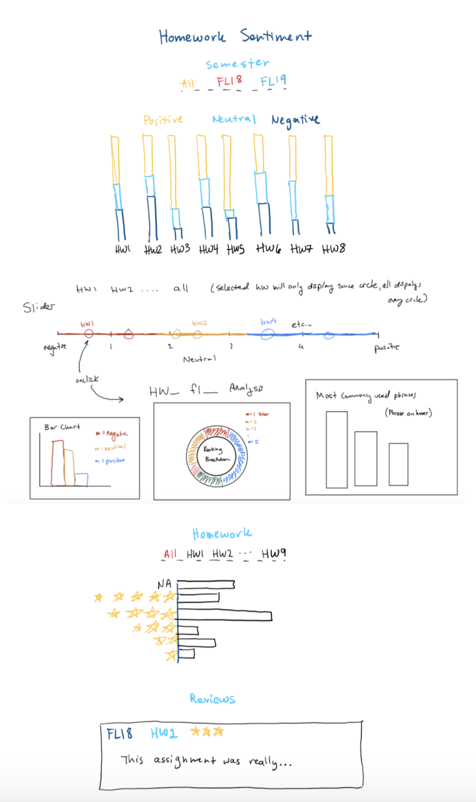Below is a depiction of our first bar chart design, with which we decided to implement the first visualization for our data. Here, we included tabs at the top of the bar chart. When a user clicks on a different tab, the stacked bar chart changes height and number of assignments according to the specific semester and for all the semesters combined. Vader returned a sentiment score with positive, neutral, and negative proportions out of 1 as well as a compound score, which determined whether the review is classified as a positive, neutral, or negative review.
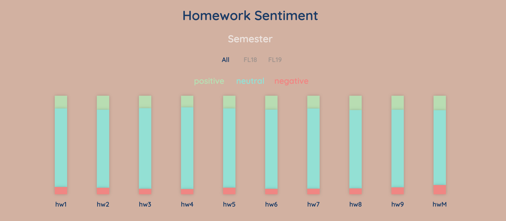We made some changes to our bar chart design. The overall features are the same except we added a slider graphic below. This allows the user to see compound scores for each homework and easily compare them. The slider chart takes the overall compound ratings provided by the Vader analysis and maps each homework onto the real number line to compare the overall sentiments of each homework. Other than that, we stayed relatively true to our original design, but changed the webpage background and slightly changed the color scheme.
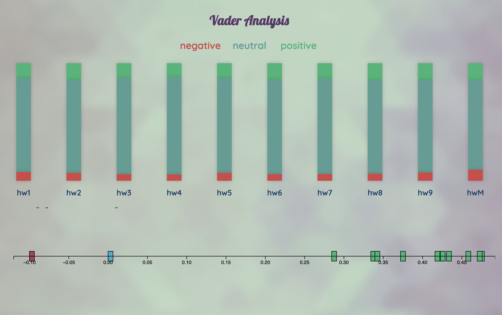We created a secondary stacked bar chart to illustrate the results from the Text 2 Emotion sentiment analysis library, shown below.
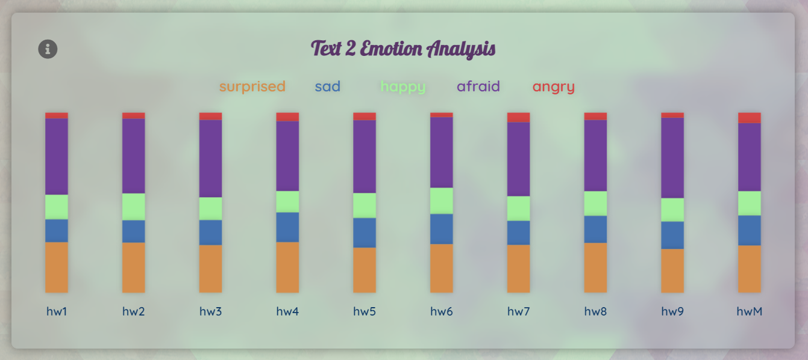Below is a depiction of our first star histogram design. We created this design to display the frequency of each review rating for the homework assignments. The width of each bar is relative to the frequency of a certain rank that a specific homework assignment received. We plan to implement some sort of tab feature similar to the semester tabs as seen in the bar chart design to tab through the homework assignments.
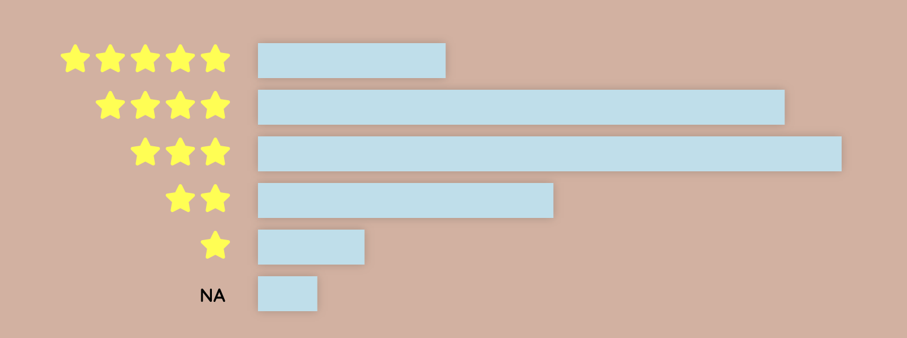In updating our star histogram design, we decided to leave it mostly unchanged, but edited the color scheme along with the rest of the webpage. We also added the ability to select a specific homework assignment to filter how the star frequencies are displayed, shown below.
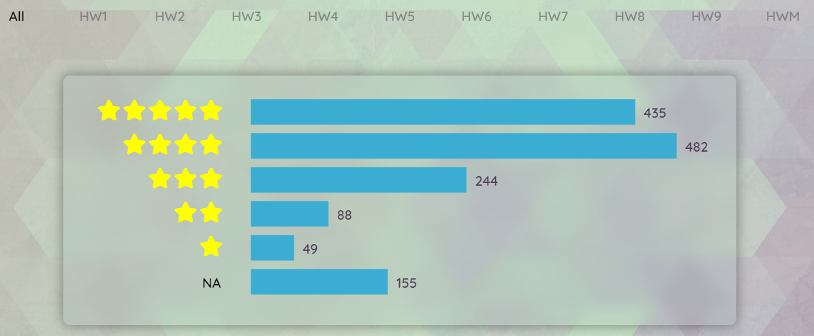We added this section so that a user can read different reviews. In this version, the reviews only display the first five reviews for a given semester, or for all semesters. However, we plan to implement different features to make this visualization even more effective.
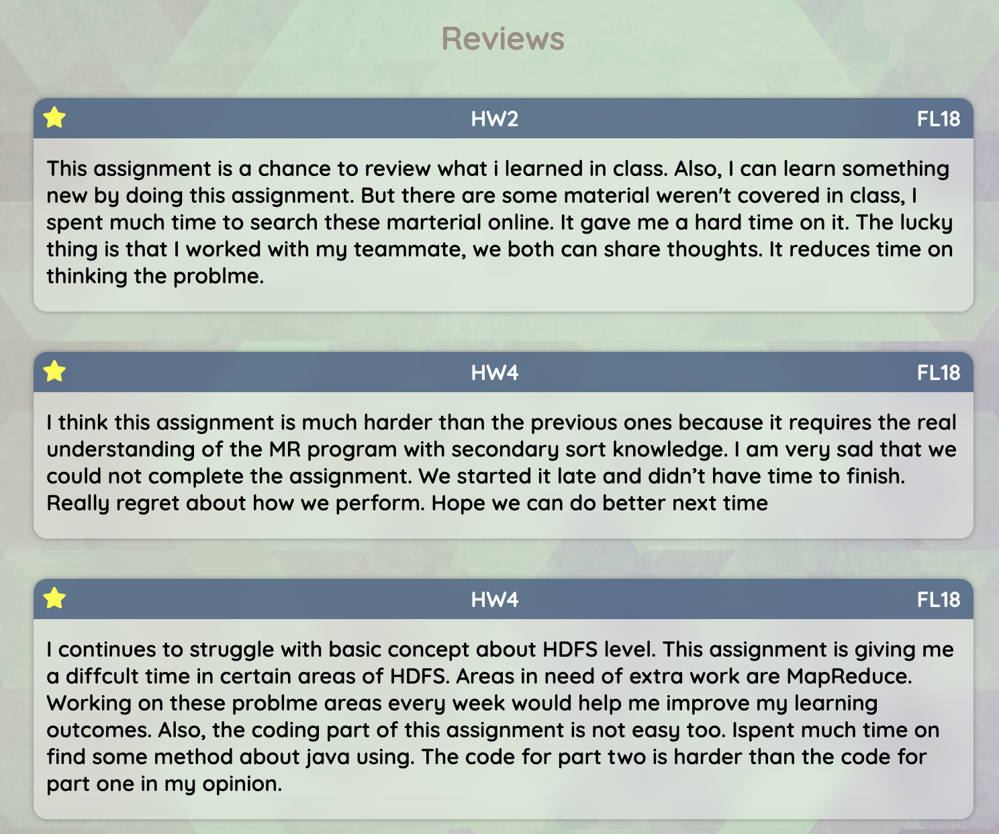For our final implementation, we updated the reviews layout with a shuffle button, signified by a single die. We also added the ability to filter reviews based on star rating, semester, and/or homework assignment. The compound Vader score is also visible, along with the predominant emotion assigned by Text 2 Emotion. The user can also easily view more reviews by selecting the View More Reviews button.
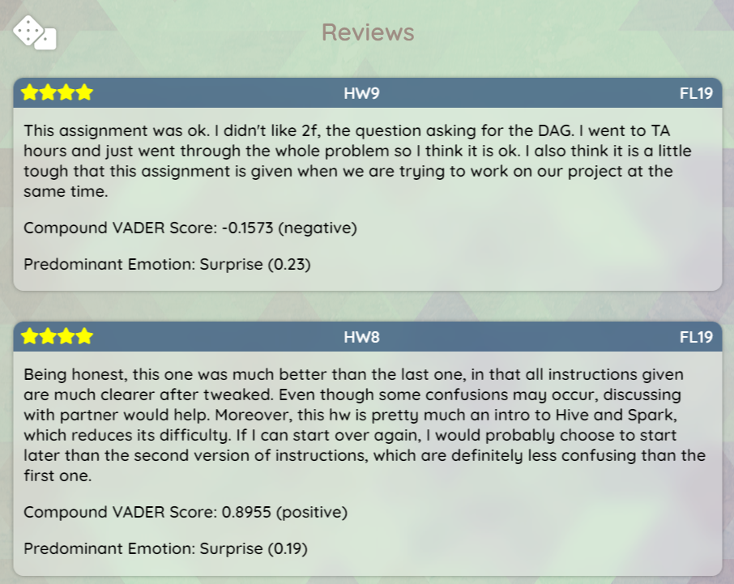 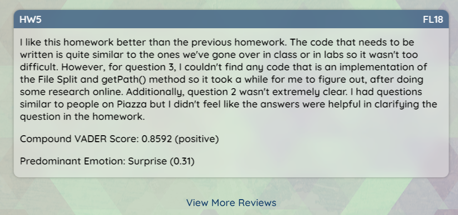Finally, we added info cards to our stacked bar charts to make it clear to the user their function and how to interpret them, as seen below
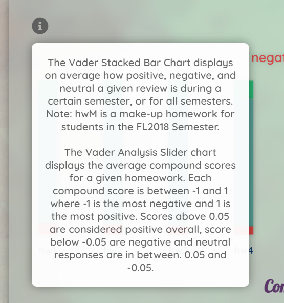 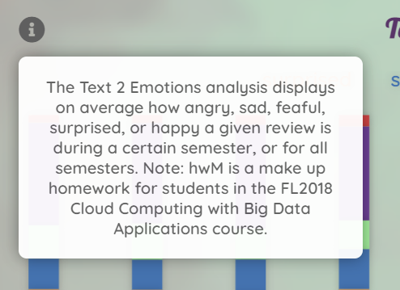As seen above, moving to the final implementation of our project, we altered the design to contain each separate chart in a "frosted-glass" container. Before, our dashboard had little distinction between each visualization, and this updated design offers more clarity here.
Our visualization is intended to give teachers and professors a better understanding of how effective their homework assignments are. As their students provide feedback, they need to understand the aspects of their assignments that are effective in teaching certain material. We want to implement interactive elements into our project to give the user a better understanding of each homework assignment throughout each semester and overall.
Pictured below is one of the critical interactive elements of our visualization. This tab allows the user to switch between semesters to view the homework assignments for each semester, and to see details about the overall reviews and the sentiments associated with a specific homework assignment. This triggers all visualizations to transition based on the selection.
We also added the ability to collapse either of the bar charts for easier page-wide navigation, as seen below:
Our reviews can also easily be filtered using the semester selector or homework selectors above. The user can easily view different reviews under the same criteria using the shuffle button (die). The user can also view more reviews by selecting the View More Reviews button.
Overall, on average each homework received a generally neutral response. However, there were many cases where students had strong opinions on homework assignments, and this is more visible with our Text 2 Emotion chart, star frequency chart, and individual reviews section.
Using our visualization, we realized that a certain response can come from many different causes, and this can vary from student to student. By using our visualization as a whole, a professor can more easily identify negative sentiment towards specific homework assignments and diagnose the reasoning.
For it's intended purposes, we believe our visualization succeeds; it is much easier to gain a real understanding of the reviews than it would be looking at the individual text files. An instructor could definitely gain useful information from our dashboard and hopefully use that information to improve their course in the future.
If we were to work on this further, we would likely experiment with different sentiment analysis libraries to gain unique takeaways from the data, and potentially experiment with different webpage designs for easier usability.